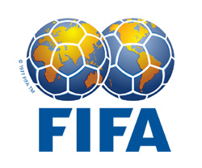
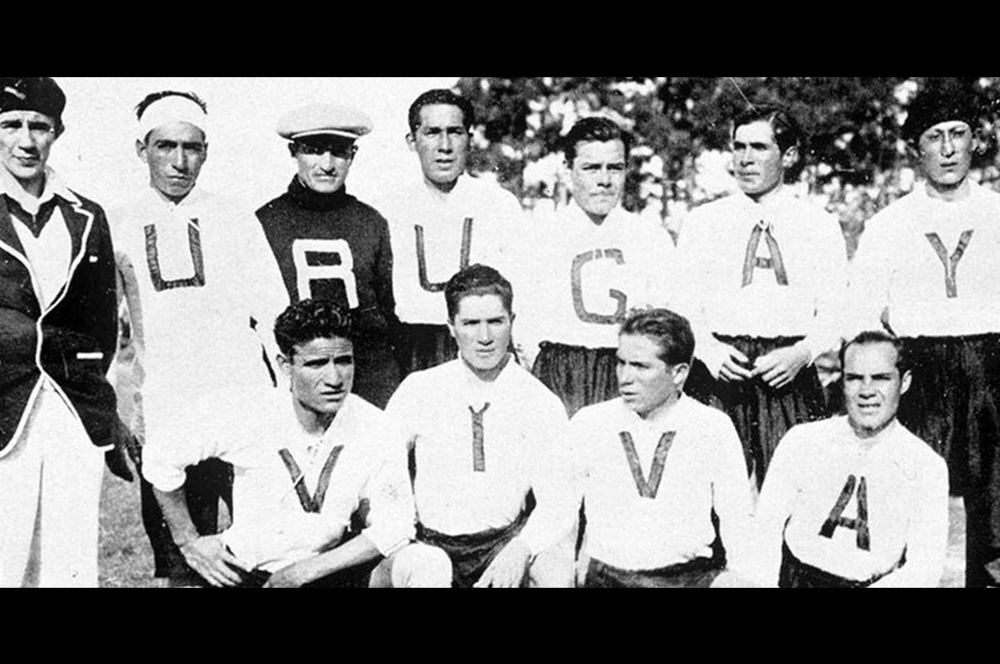
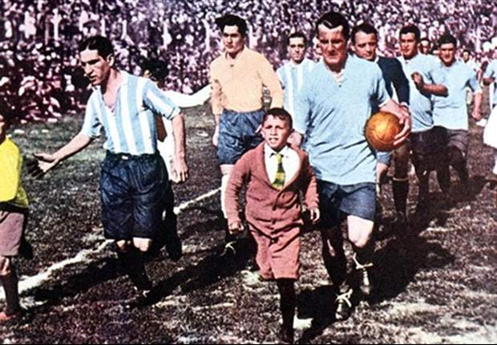

Perantau's
- Faisal Abdau
- Fazrul Haque
- Gom Gom Parulian
- Janriadi Lumban gaol
World Cup FIFA

Piala Dunia adalah kompetisi sepak bola International yang diselenggarakan oleh Fédération Internationale de Football Association(FIFA), Kejuaraan ini telah diselenggarakan setiap empat tahun sekali sejak turnamen 1930, kecuali pada tahun 1942 dan 1946, yang tidak diselenggarakan karena Perang Dunia II. Pertandingan sepak bola internasional pertama di dunia sebelum adanya piala dunia ialah dimainkan di Glasgow pada tahun 1872 antara Skotlandia dengan Inggris.
FIFA sendiri didirikan tahun 1904, didirkan oleh Robert Guérin (1876 – 1952) dan Presiden FIFA sekarang ialah Sepp Blater yang akan pensiun akhir 2014 ini. saat FIFA pertama kali mengadakan piala dunia di Uruguay, kompetisi ini hanya diikuti oleh 13 tim, dan dibabak final untuk pertama kalinya mempertemukan negara antara Argentina dan Uruguay dimana uruguay menjadi juara untuk pertama kalinya unggul dengan skor 4-2.

AND NOW
World Cup FIFA Brazil

Sebanyak tiga puluh dua (32) tim nasional telah masuk kualifikasi berikut beberapa Informasi dari beberapa zona seluruh dunia
Zona Conmebol
- brazil
- Argentina
- Kolombia
- Chili
- Ekuador
- Kamerun
- Uruguay
Zona AFC
- Jepang
- Australia
- Iran
- Korea Selatan
Zona Concacaf
- Amerika Serikat
- Kosta Rika
- Mexico
- Honduras
Zona Afrika
- Nigeria
- Pantai Gading
- Ghana
- Aljazair
Zona Eropa
- Belanda, Italia, Belgia, Jerman, Swiss, Rusia, Bosnia, Inggris, Spanyol, Kroasia, Perancis, Portugal dan Yunani
Daftar peserta Piala Dunia Brazil
Grup A
Grup B
Grup C
Grup D
Daftar peserta Piala Dunia Brazil
Grup E
Grup F
Grup G
Grup H
Jadwal Pertandingan Piala Dunia 2014
-
strong Enjoy! :)
@TI D Pagi